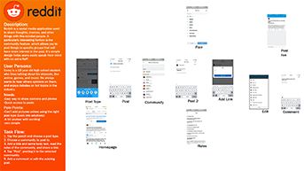
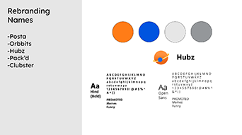

Redesigning Reddit
My Task
For this project, we were to create a complete redesign of an app, including prototypes and micro-interactions. I was redesigning Reddit, an app focused on connecting users via communities. I really wanted to lean into a space concept, as users post content that circulate through communities like how planets revolve around a star in a solar system. To start, I took a look at the original app. This helped me figure out what was working and where I could improve it.
Making a plan
So I had an idea of what I should do, but how would I start to accomplish the goal I had set? I made a plan by creating an app flow of my own, as well as a rebranding document describing the changes I wanted to make for my app. Planning out the app really helped me figure out how my app would look in the end. I chose fonts, a color scheme, and a logo and name. After this, I created an interaction guide. Not only did this help me figure out exactly how each micro-interaction should look, but I as also able to create the assets that I'd use later on when I animated the processes.
Blasting off with animation

With a plan in place and my assets ready, all I had left to do was to animate the micro-interactions. For this project, I used After Effects to create animations. Figuring how to work with the layers was a bit challenging, but I got some help from my professor at the time and with his help, I was able to figure out how to resolve most of the issues.